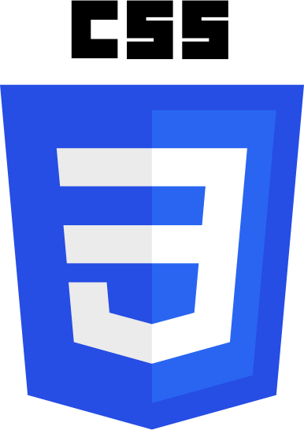

O mnie
Uczę się kodować już od około roku i widzę zauważalne postępy. Do wykonania następnego kroku brakuje mi doświadczenia w prawdziwych projektach zdobytego u boku profesjonalistów. Dlatego poszukuję firmy, która zatrudni mnie w roli junior front-end developera lub pozwoli odbyc staż w takim charakterze. W zamian otrzyma entuzjastycznie podchodzącego do wykonywanych obowiązków pracownika z pasją do tworzenia coraz lepszego kodu i mnóstwem zapału do nauki.
Jeśli więc pracujesz w firmie bądź agencji interaktywnej, która ceni rozwój swoich pracowników i nie boi się w nich inwestować, zapraszam do kontaktu.
Umiejętności
Języki i technologie
- 


Portfolio
Oto kilka projektów, które wykonałem w trakcie nauki. Po zapoznaniu się z poniższym kodem powinieneś mniej więcej wiedzieć, w którym miejscu mojej drogi do juniora znajduję się obecnie.
Widget pogodowy
Mała aplikacja wykorzystująca Apixu API do pobierania pogody w lokalizacji użytkownika, wyświetlająca ikonę w zależności od pogody oraz umożliwiająca zmianę jednostek ze stopnie Celsjusza na Fahrenheita.
Aplikacja Twitch.tv
Mała aplikacja wykorzystująca API Twitcha do pobierania danych o kanałach i dzieląca je na nadające i nie nadające w danej chwili.
Spinnery
Kilka spinnerów wykorzystujących animacje CSS.
The Cube
Kostka 3D zbudowana przy użyciu perspektywy 3D w CSS z krótkim skryptem do przełączania widocznej ścianki.
Kontakt
Jeśli czujesz taką potrzebę, możesz się ze mną skontaktować w jeden z poniższych sposobów.